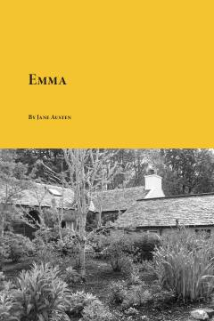

EYosh va boy Emma Vudxausning hayoti va uning ishqiy sarguzashtlari haqidagi klassik roman.
Asar yosh, go'zal, badavlat va o'ziga bino qo'ygan Emma Vudxaus haqida hikoya qiladi. U o'zini boshqalarning shaxsiy hayotini birlashtiruvchi matchmeyker deb bilib, do'stlari taqdiriga aralashishi tufayli turli qiziqarli va kulgili vaziyatlarga tushib qoladi. Roman XIX asr Angliya zodagonlari hayotini o'tkir kinoya va chuqur psixologik tahlil orqali ochib beradi.